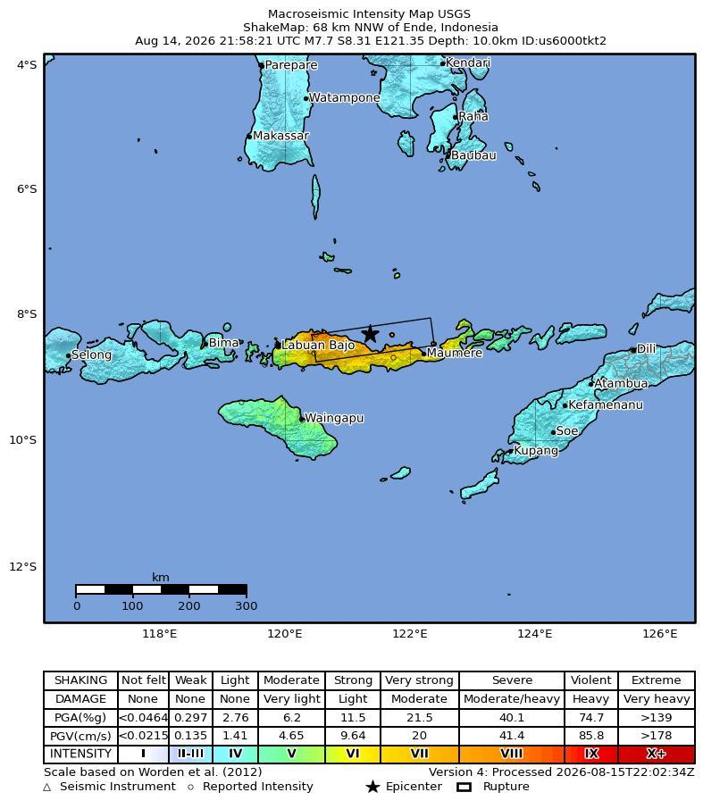
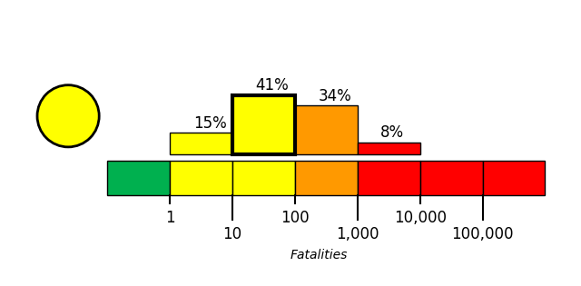
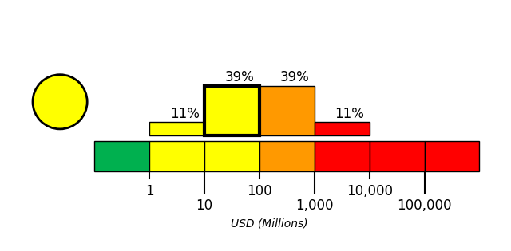

On August 15, 2026, at approximately 05:58 local time (Asia/Makassar; 2026-08-14 21:58 UTC), a magnitude 7.7 earthquake, with a reported depth of 10 km, occurred 68 km NNW of Ende, Indonesia. The USGS epicenter was at -8.3101° latitude and 121.352° longitude.
The Sunda convergent margin extends for 5,600 km from the Bay of Bengal and the Andaman Sea, both located northwest of the map area, towards Sumba Island in the southeast, and then continues eastward as the Banda arc system. This tectonically active margin is a result of the India and Australia plates converging with and subducting beneath the Sunda plate at a rate of approximately 50 to 70 mm/yr. The main physiographic feature associated with this convergent margin is the Sunda-Java Trench, which stretches for 3,000 km parallel to the Java and Sumatra land masses and terminates at 120° E. The convergence of the Indo-Australia and Sunda plates produces two active volcanic arcs: Sunda, which extends from 105 to 122° E and Banda, which extends from 122 to 128° E. The Sunda arc results solely from relatively simple oceanic plate subduction, while the Banda arc represents the transition from oceanic subduction to continental collision, where a complex, broad deforming zone is found.
Based on modern activity, the Banda arc can be divided into three distinct zones: an inactive section, the Wetar Zone - bound by two active segments, the Flores Zone in the west and the Damar Zone in the east. The lack of volcanism in the Wetar Zone is attributed to the collision of Australia with the Sunda plate. The gap in volcanic activity is underlain by a gap in intermediate depth seismicity, which is in contrast to nearly continuous deep seismicity below all three sections of the arc. The Flores Zone is characterized by down-dip compression in the subducted slab at intermediate depths and late Quaternary uplift of the forearc. These unusual features, along with GPS data interpretations, show that the Flores Zone marks the transition between subduction of oceanic crust in the west and the collision of continental crust in the east.
The Java section of the Sunda arc is considered relatively aseismic historically when compared to the highly seismically active Sumatra section, despite both areas being located along the same active subduction margin. Shallow (0-20 km) events have occurred historically in the overlying Sunda plate, causing damage to local and regional communities. A recent example was the May 26, 2006 M6.3 left-lateral strike-slip event, which occurred at a depth of 10 km in central Java, and caused over 5,700 fatalities. Intermediate depth (70-300 km) earthquakes frequently occur beneath Java as a result of intraplate faulting within the Australia slab. Deep (300-650 km) earthquakes occur beneath the Java Sea and the back-arc region to the north of Java. Similar to other intermediate depth events these earthquakes are also associated with intraslab faulting. However, this subduction zone exhibits a gap in seismicity from 250-400 km, interpreted as the transition between extensional and compressional slab stresses. Historic examples of large intraplate events include: the 1903 M8.1 event, 1921 M7.5 event, 1977 M8.3 event, and August 2007 M7.5 event.
Large thrust earthquakes close to the Java trench are typically interplate faulting events along the slab interface between the Australia and Sunda plates. These earthquakes also generally have high tsunamigenic potential due to their shallow hypocentral depths. In some cases, these events have demonstrated slow moment-release, and have been defined as ‘tsunami’ earthquakes, where rupture is large in the weak crustal layers very close to the seafloor. These events are categorized by tsunamis that are significantly larger than predicted by the earthquake’s magnitude. The most notable tsunami earthquakes in the Java region occurred on June 2, 1994 (M7.8) and July 17, 2006 (M7.7). The 1994 event produced a tsunami with wave run-up heights of 13 m, killing over 200 people. The 2006 event produced a tsunami of up to 15 m, and killed 730 people. While both of these tsunami earthquakes were characterized by rupture along thrust faults, they were followed by an abundance of normal faulting aftershocks. These aftershocks are interpreted to result from extension within the subducting Australia plate, while the mainshocks represented interplate faulting between the Australia and Sunda plates.

The magnitude 7.7 earthquake caused widespread building collapse and severe damage across Flores Island in eastern Indonesia, including buildings and homes in Maumere and a collapsed building in Reok, East Nusa Tenggara province [2][5][7]. At a port in Maumere, part of a building collapsed amid dust and rubble as people fled into the streets [5]. Rescuers searched collapsed-building debris for trapped residents, bodies, and possible survivors [1][4][11][12]. Damage estimates varied substantially: a BNPB update recorded 346 damaged houses—157 severely, 41 moderately, and 148 slightly damaged [13]—whereas another report attributed to the National Search and Rescue Agency stated that more than 900 homes were destroyed and 450 damaged [8]. Preliminary reporting also identified damage to nearly 160 houses, dozens of educational and health facilities, and other public buildings [10], while broader reports described hundreds of damaged homes and other buildings [3][6][9].
Roads: Earthquake-triggered landslides across six regencies on Flores blocked roads and villages, complicating rescue operations [8]. In Ende regency, landslides cut off the Trans-Flores Highway, described as a roughly 700-kilometre (435-mile) paved mountain road extending across Flores Island from Labuan Bajo to Larantuka [14][15][2][18]. Multiple sections of the highway were blocked, interrupting transportation between affected communities across the mountainous island [16][19][21][22]. Provincial and local authorities also reported that other roads were cut off or blocked by landslides [17][13][20][23][24], while access problems affected rescue operations [26]. Communications: Communication disruptions impeded the collection of damage and casualty reports [15], and broader communication and access problems affected rescue operations [26]. Airports: Public infrastructure in the region was reported as severely damaged, including five airports [25]. Ports: Rescue personnel searched for victims in the ruins of the Laurensius Say Port in Maumere, Sikka, East Nusa Tenggara, indicating severe earthquake damage at the facility [19].
Immediately after the magnitude-7.7 earthquake, BMKG issued a tsunami warning within two minutes, and thousands of residents evacuated in Nagekeo, Maumere, and Ende [27]. Authorities urged coastal residents to move to higher ground [2]. Nikkei and SBS reports placed the warning's cancellation at about 2.5 to 3 hours after the earthquake; Nikkei reported waves under one metre, while SBS said monitoring found no sea-level changes threatening coastal communities [25][27]. By Sunday, approximately 5,000 people had been evacuated as landslides and blocked roads affected eastern Indonesia [28]. Thousands of displaced residents spent Saturday night outdoors because of continuing fears of aftershocks [29]. Temporary shelters were established on Flores Island, where residents were documented resting on August 15 [30][13]. By August 16, authorities reported at least 53 deaths and more than 130 injuries [8]. Rescue teams recovered six additional bodies on Sunday, raising the toll from the previously reported 47 fatalities [29]. Search teams continued combing debris for survivors [10], although landslides had buried or isolated remote villages across six regencies on Flores Island [18]. Communications disruptions and power outages impeded search operations; however, most landslides had been cleared and roads to previously isolated villages reopened [16]. Damage to Ruteng General Hospital required healthcare workers to treat patients in makeshift tents outside the facility [31]. By Sunday, the electricity supply had been almost fully restored, although repairs to distribution lines remained underway [32].
USGS PAGER tool estimated the fatalities to be in the yellow alert level, which is most likely between 10 and 100 with a probability of 41%.
USGS PAGER tool estimated the economic loss to be in the yellow alert level, which is most likely between 10 and 100 million dollars with a probability of 39%.

